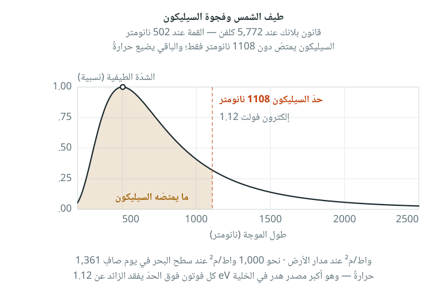

الطاقة الشمسية
Solar energy
الإشعاع الكهرومغناطيسي الواصل من الشمس إلى الأرض، وقدرته عند مدار الأرض 1,361 واط لكل متر مربع، وطيفه يقارب جسمًا أسود عند 5,772 كلفن. لا تُحوَّل كل هذه الطاقة إلى كهرباء لأن الفوتون يجب أن يتجاوز فجوة المادة.
الشمس مفاعل اندماجي يحوّل الهيدروجين إلى هيليوم ويصدر الطاقة كإشعاع، وأعلى كثافة طاقة في قلبها تُنتج سطحًا بحرارة فعّالة 5,772 كلفن. يصل إلى مدار الأرض نحو 1,361 واط/م²، ويُضعف الغلاف الجوي هذا الرقم إلى نحو 1,000 واط/م² في يوم صافٍ عند سطح البحر، ثم تعتمد الزيادة على زاوية السقوط والغبار والسحاب.
التحويل إلى كهرباء يحدث في الخلايا الكهروضوئية عبر التأثير الكهروضوئي الداخلي: فوتون طاقته أكبر من فجوة المادة يحرّر إلكترونًا، فتنشأ فرق كمون وتيار. وفجوة السيليكون 1.121 إلكترون فولت تعني أن الفوتون الأطول من 1,108 نانومتر لا يفعل شيئًا، وأن الفوتون الأقصر يهدر فرق طاقته حرارةً — وهذا سقف نظري معروف.
الآلية
كيف يحدث الأمر على مستوى الجسيمات أو المتغيّرات المباشرة
إشعاع الشمس يتبع قانون بلانك لتوزيع الطاقة على أطوال الموجة: الشدّة عند طول موجة λ تُحسب من حرارة السطح ومن ثوابت بلانك وبولتزمان وسرعة الضوء. القمة تتحرك عكسيًّا مع الحرارة وفق قانون فين λmax = 2,898 ⁄ T بالميكرومتر، فتعطي 502 نانومتر عند 5,772 كلفن. في الخلية يتولّد زوج إلكترون–فجوة عند امتصاص الفوتون، ويُفصل الزوج بمجال كهربائي داخلي عند وصلة p–n قبل أن يتلاشى، فيسري تيار. ولذلك يعتمد الأداء على طيف الضوء وعمر حامل الشحنة معًا، لا على الشدّة وحدها.
الأرقام والوحدات
العلاقات والوحدات والنطاقات العددية التي تسند الشرح
الثابت الشمسي 1,361 واط/م² مقيس عند المدار. الطاقة الكامنة في فوتون طوله 500 نانومتر = 1240 ⁄ 500 = 2.48 إلكترون فولت، ومنها يفقد السيليكون 1.36 إلكترون فولت حرارةً ويستفيد 1.12 كحدّ أقصى. وفي طيف 5,772 كلفن يسقط نحو 19% من الطاقة بعد 1,108 نانومتر فلا يُستفاد منها في السيليكون. والحدّ النظري لكفاءة خلية واحدة بشقّ واحد نحو 33.7% (حدّ شوكلي–كوايسر)، وأفضل الخلايا التجارية تبلغ 22–24%.
الفرق الدقيق
المفهوم الملتبس الذي يُخلَط به، وأين ينفصلان
الطاقة الشمسية ليست الحرارة الشمسية: كلتاهما من مصدر واحد، لكن الأولى تُحوَّل إلى كهرباء بفجوة إلكترونية، والثانية تُجمع حراريًّا في مائع أو سطح. والثابت الشمسي ليس القدرة المتاحة على سطح الأرض: الغلاف الجوي والزوايا والسحاب تخفضها إلى قرابة 1,000 واط/م² في أفضل الأحوال، وأقل كثيرًا في الغيوم. والقدرة المركّبة ليست الإنتاج: خلية بسعة 400 واط تُنتج فعلًا نحو 1,600 واط ساعة يوميًّا في موقع متوسط بعامل حمل 40% لا 100%.
حدود التعريف
أين ينكسر التعريف أو النموذج وما الذي لا يفسّره
الحدّ النظري 33.7% لخلية بشقّ واحد يعني أن ثلثي الطاقة يذهب حرارةً أو يمرّ دون امتصاص، مهما تحسّنت التقنية. وتراكم الخلايا المتعدّدة الفجوات يرفع السقف نظريًّا إلى 68% لكن بكلفة وتعقيد يميّزان الفضاء عن الأسطح. وتتأثر الخلايا بالحرارة سلبًا: معامل القدرة نحو −0.35% لكل درجة فوق 25 °مئوية، فاليوم الحار يخفض الإنتاج. أما التخزين فهو القيد النظامي: بلا بطاريات أو شبكة مرنة يبقى الإنتاج مرتبطًا بساعات الشمس صيفًا وشتاءً.

| الكمية | القيمة | المصدر |
|---|---|---|
| الثابت الشمسي عند مدار الأرض | 1361 واط/م² | [1] |
| حرارة سطح الشمس الفعّالة | 5772 كلفن | [1] |
| فجوة الطاقة في السيليكون عند 300 كلفن | 1.121 إلكترون فولت | [2] |
| الحدّ النظري لكفاءة خلية واحدة بشقّ واحد | 33.7 % | [3] |
المصادر
- 1 Solar radiation — the solar constant and solar spectrum — NASA Earth Observatory. earthobservatory.nasa.gov/features/SolarRadiation · اطُّلع عليه 2026-11-16
- 2 DOE — Solar Photovoltaic Technology Basics — U.S. Department of Energy. www.energy.gov/eere/solar/solar-photovoltaic-technology-basics · اطُّلع عليه 2026-11-16
- 3 Shockley–Queisser limit — detailed balance limit of single-junction cells — Journal of Applied Physics, American Institute of Physics. pubs.aip.org/aip/jap/article/32/3/510/155442 · اطُّلع عليه 2026-11-16
استشهد بهذا المصطلح
الصيغتان مبنيتان من بيانات الصفحة نفسها: العنوان والتاريخ ورابط النسخة المنشورة.
الطاقة الشمسية — Solar energy. (2026). ديوان المعرفة — انفراد. https://infiradev.com/diwan/terms/solar-energy.html
@misc{solar-energy2026,
title = {الطاقة الشمسية},
titleaddon = {Solar energy},
howpublished = {{ديوان المعرفة — انفراد} — مرجع علمي عربي},
year = {2026},
url = {https://infiradev.com/diwan/terms/solar-energy.html},
urldate = {2026-11-16},
note = {مراجعة علمية: مراجعة آلية — ديوان المعرفة (روابط المصادر + عقد المحتوى + وجود الرسم) 2026-11-16}
}
راجعه: مراجعة آلية — ديوان المعرفة (روابط المصادر + عقد المحتوى + وجود الرسم) 2026-11-16 · 2026-11-16 · آخر تحديث 2026-11-16